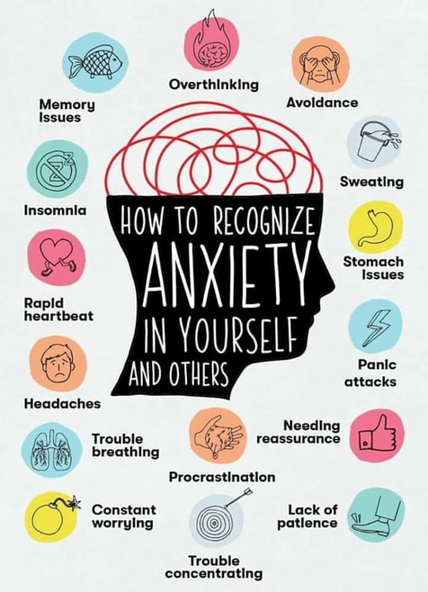

Anxiety is the body’s response to stress. It is a feeling of fear that can also be positive as it can motivate us or warn us when we are in danger. The harms of anxiety occur when you have feelings of anxiety for long periods of time or extreme amounts of anxiety. There are many types of anxiety disorders, which are the most common form of emotional disorder. Some types of anxiety disorders include panic disorder, obsessive-compulsive disorder, social anxiety disorder, post-traumatic stress disorder, and several others. Anxiety can affect anyone at any age. Many people often confuse the difference between a panic attack and an anxiety attack. Anxiety attacks are when there is an excessive and unrealistic worry over a period of at least six months. It can cause things like restlessness, fatigue, sleep disturbances, and personality changes. Panic attacks, on the other hand, are intense periods of fear or feeling of doom developing over a very short time frame, usually up to 10 minutes. Symptoms of panic attacks include sweating, shortness of breath, chest pain, nausea, numbness, and sudden overwhelming fear.
Anxiety and feeling of being anxious to happen to all teenagers. Anxiety is a reaction to stress and is very normal, but what can seem like a normal struggle can actually be a sign of an anxiety disorder. According to the National Institute of Mental Health, approximately 25% of 13-18-year-olds have an anxiety disorder, and just under 6% have a severe anxiety disorder.
